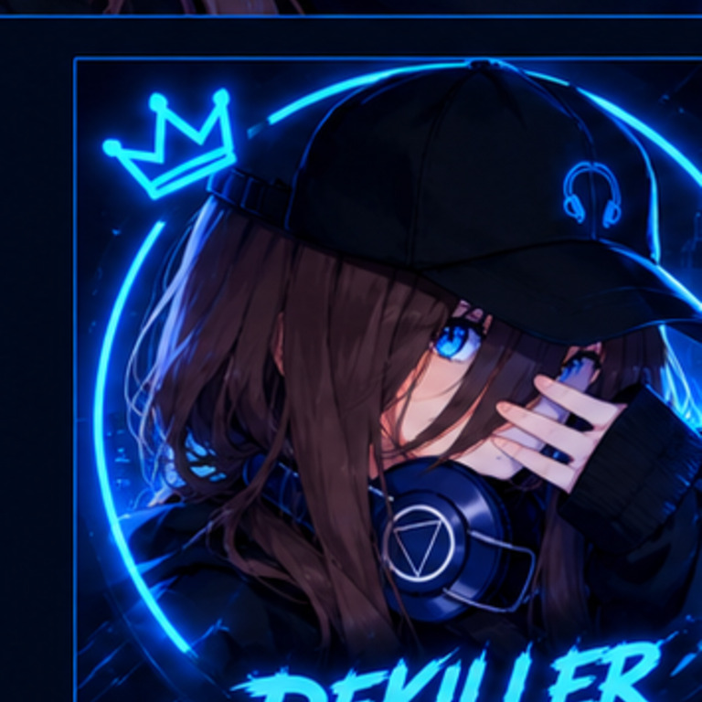

IA · DESARROLLO
Dekiller AI
Un proyecto personal para crear un asistente de inteligencia artificial con chat, memoria y herramientas conectadas bajo un núcleo común.
En desarrolloMI ESPACIO EN INTERNET
Soy Dekiller. Exploro la tecnología, creo proyectos desde Android y encuentro inspiración en el anime, los videojuegos y las palabras.

01 / IDENTIDAD

Me interesa crear, experimentar y aprender haciendo. Trabajo en ideas de programación y herramientas de inteligencia artificial desde mi teléfono, además de explorar la edición audiovisual y el diseño digital.
Esta es mi página personal. Iré compartiendo mis proyectos e ideas a medida que crezcan.
02 / TECNOLOGÍA
Ideas que estoy desarrollando, probando o aprendiendo a construir.
IA · DESARROLLO
Un proyecto personal para crear un asistente de inteligencia artificial con chat, memoria y herramientas conectadas bajo un núcleo común.
En desarrolloANDROID · CÓDIGO
Experimentos y utilidades creadas desde Android con Termux, Node.js y Python, sin depender de un ordenador.
Laboratorio personalWEB · EXPERIMENTOS
Interfaces, asistentes y pequeñas aplicaciones que voy construyendo y mejorando con cada prueba.
En aprendizajeLos proyectos están en evolución. Añadiré enlaces públicos cuando estén listos para mostrarse.
03 / INSPIRACIÓN
Algunas de las cosas que forman parte de mi lado creativo.
Historias, personajes y escenas que inspiran ideas, emociones y estética visual.
Me atraen los desafíos, la exploración y los juegos de acción con dificultad exigente.
Sonidos y canciones que acompañan mis sesiones creativas y mis proyectos.
04 / EXPRESIÓN
Un espacio para mis textos, poemas, diseños y contenido audiovisual.
A veces, una idea empieza como un susurro.
La escribo, la imagino y la convierto en algo mío.
— dekiller ✨
05 / PORTAFOLIO
Servicios creativos que quiero mostrar y desarrollar.
Ediciones para contenido corto, gaming y redes sociales.
Diseños llamativos para vídeos y contenido digital.
Conceptos visuales y recursos creativos asistidos por IA.
Ideas y recursos visuales para avatares de creadores.
Portafolio en preparación. Los servicios y su disponibilidad se confirmarán al publicar ejemplos y condiciones.
06 / CONECTEMOS
Encuentra mis publicaciones, proyectos creativos y novedades en mis redes. También puedes visitar mi página de Ko-fi.
Gracias por visitar mi espacio y apoyar mis proyectos creativos.